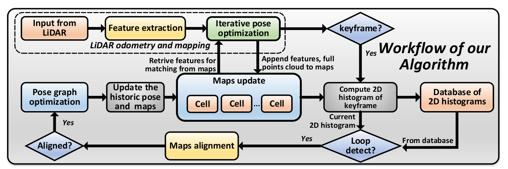

| author： | QINBINGJIA |
| contents： | 论文思路 |
| ROS代码构架 | |
| 代码修改及适配 |
2019.11.30：
按照Jiarong Lin和Fu Zhang的论文Loam livox: A fast, robust, high-precision LiDAR odometry and mapping package for LiDARs of small FoV以及A fast, complete, point cloud based loop closure for LiDAR odometry and mapping的思路对相关算法进行理解，以下即论文大致讲述的内容。主要对第二篇基于闭环激光雷达里程映射的内容进行学习。另外有关于SLAM最新成果论文的总结网站跟踪SLAM前沿动态【周更】，逼乎上用户任乾有关于激光SLAM论文的分析。
2019年9月十五日的论文。该篇论文主要介绍的适用于Livox雷达的Loam算法，为后一篇用于Livox雷达的闭环修正算法的基础。接下来的内容参考论文原文及知乎文章激光SLAM | 基于固态雷达的里程计：Loam Livox。
提出了一种用于small Fov和不规则采样的激光雷达的鲁棒性、实时性的LOAM算法。
固态激光雷达日趋收到关注，其实现方式有诸如微机电系统（MEMS）扫描、光学相控阵（OPA）、瑞斯利棱镜等。固态激光雷达的使用为相应的SLAM带来了挑战（原版LOAM用于传统的机械旋转式激光雷达），其主要问题是视场通常很小，导致帧内的特征非常少，使得后续的特征匹配容易发生退化，容易被移动的物体干扰。另外固态激光雷达的不规则扫描使得扫描瓣离得很远，难以得到机械雷达的定期扫面获得的特征提取简便的特性。此外还有不重复扫描、运动模糊的特点。所以作者开发了Loam_Livox软件包。
（似乎和我们要采用的机械雷达没太多关系。。根据知乎文章的描述大致流程和LOAM算法差不多。。另外我们要使用的会是基于A-LOAM算法的，其计算速度似乎会更快。）
提出了一种修正激光雷达测程测图(LOAM)长期漂移的闭环方法。该方法计算局部地图关键帧的二维直方图，并将二维直方图的归一化互相关作为当前关键帧与地图关键帧之间的相似度指标。结果表明，该方法具有速度快、旋转不变性、检测结果可靠、精度高等优点。
闭环闭合是SLAM系统的重要组成部分，用于估计局部特征匹配引起的长期累积漂移。在一种常见的环路闭合模式中，环路的成功检测起着至关重要的作用。循环检测是通过测量任意两个地点之间的相似性来识别以前访问过的地点的能力。在视觉SLAM算法中，利用词袋模型，将特征描述符聚类为词，可以在词空间中计算观测值之间的相似性。但与相机传感器相比，点云数据只有三维形状的信息可用于匹配的特征较少。因而作者提出了该算法，并将提出的环路闭合方法与Livox MID40 2传感器集成到LOAM算法中。
常用的内容包括：1.利用手工制作的描述符提取二维图像的局部特征，如尺度不变特征变换(SIFT)、二元稳健独立基本特征(BRIEF)、定向快速旋转特征(ORB)等。2.对这些特性进行聚类，并构建一个字典来实现循环检测。3.利用检测循环，提出了位姿图优化算法，解决了地图中历史位姿的更新问题。（。。前人研究。。）
主要贡献：1.提出了一种快速检测两个关键帧相似度的循环检测方法；2.将我们的环路闭合系统，包括环路检测、地图对齐和位姿优化整合到一个激光雷达测程和映射算法中；3.在Github上开源我们的系统和数据集，为基于点云的循环关闭提供了一个可用的解决方案和范例。（emmm就是前面提到的内容。。）
流程框图如下。如果到达指定数量的帧数（如100帧），则创建关键帧以形成一个小的本地地图补丁。通过LOAM将与新关键帧对应的原始点注册到全局地图的单元中，然后检索这些原始点来计算其2D直方图。将计算出的2D直方图与数据库进行比较，后者包含由所有过去关键帧组成的全球地图的2D直方图，以检测可能的循环。同时，将新的关键帧2D直方图添加到数据库中，以供下一个关键帧使用。一旦检测到一个循环，关键帧将与全局图对齐，并执行位姿图优化来纠正全局图中的偏移。
1. 映射和单元格(MAP & CELL)
A. CELL
把3D空间位置按照xyz坐标，分成多个固定大小的cell，按照几何位置，把点云中的点分到对应的cell中。
令`N`为cell`C_c`内点数，则根据根据cell内点的坐标计算均值`C_\mu=1/N(\sum_(i=1)^(N)P_i)`和方差`C_\sum=1/(N-1)(\sum_(i=1)^(N)(P_i-c_\mu)(P_i-c_\mu)^T)`。为了加快均值和协方差的计算速度，我们推导出它的递归形式如`C_\mu=1/(N+1)(NC_\mu^'+``P_{N+1})`、`C_\sum=(\sum_(i=1)^(N+1)(P_i-c_\mu)(P_i-c_\mu)^T)=1/N[(N-1)C_\sum^'+(P_{N+1}-C_\mu^')(P_{N+1}-C_\mu^')^T+``(N+1)(C_\mu^'-C_\mu)(C_\mu^'-C_\mu)^T+``2(C_\mu^'-C_\mu)(P_{N+1}-C_\mu^')^T]`，其中`C_\mu^'`和`C_\sum^'`是现有点的参数。因而定义`C=(C_c,C_\mu,C_\sum,\{P_i\})`。
B. MAP
`M`是保存在单元格中的所有原始点的集合。更具体地说，`M`由一个哈希表`H`和一个全局八叉树`O`组成。八叉树`O`能够找出给定范围内特定区域内的所有单元格。
2. 旋转不变性的2D直方图
我们快速循环检测的主要思想是使用2D类图直方图粗略地描述关键帧。二维直方图描述了特征方向的欧拉角在关键帧中的分布。
A. 单元格中的特征类型和方向
对于每个单元，我们确定其点形成的形状和相关的特征方向(记为`C_d`)。同样，有`C_\sum V=V\Lambda`。其中`\Lambda`为对角阵特征值降序排列。在实际应用中，为了提高鲁棒性，我们只考虑具有5个或更多点的单元格。每个单元格的特征类型就是根据特征值的情况来定的：
B. 旋转不变性
为了使我们的特征描述符不受关键帧任意旋转的影响，我们通过将每个特征方向乘以一个额外的旋转矩阵`R`来旋转每个特征方向`C_d`，并期望大部分特征方向位于X轴上，其次大部分位于Y轴上。
由于平面特征比直线特征更可靠(例如，将平面特征的边缘视为直线特征)，因此我们利用平面单元的特征方向来确定旋转矩阵R。计算一个关键帧里所有特征平面的协方差`Σ_d=\sum_{i=1}^N C_{i_d}C_{i_d}^T`，其中`C_{i_d}`为第`i`个特征平面的特征方向。同样,`Σ_d`的特征值分解为`Σ_dV_d=V_d\Lambda_d`，`V_d`和`\Lambda_d`与前面类似。旋转矩阵`R=[(V_{d_1},V_{d_2},V_{d_1}\timesV_{d_2})]^T`。
在计算旋转矩阵R之后，我们将旋转变换应用于所有的特征(平面和直线)方向。利用关键帧中所有单元的旋转不变特征方向，计算二维直方图如下：
首先，对于给定的特征方向`C_d = [(C_{d_x}, C_{d_y}, C_{d_z})]`，我们选择X分量为正的方向，即`C_d = sign(C_{d_x})·C_d`。然后计算特征方向的欧拉角`\theta=sin^{-1}(C_{d_z})+90°\in[0°,180°]`、`\phi=tan^{-1}(C_{d_y}/C_{d_x})+90°\in[0°,180°]`。把水平角按照每3°分一个区间，因而这个2D直方图使用了60×60的矩阵，每个区间对应一个元素，这个矩阵的元素表示根据偏航φ和θ对应的对应线/面单元的数量。为了增强二维直方图对可能噪声的鲁棒性，在计算的每个二维直方图上应用高斯模糊。
A. 闭环检测程序
n帧（如100帧）被分组入一个关键帧`F`中，它可以看作是全球地图`M`的一个局部区域，包含最后n帧中出现的所有单元格。通过计算一个新的关键帧`F`的2D直方图及其与过去所有关键帧的相似度来检测一个循环。然后将带有检测到循环的关键帧与映射匹配，并使用位姿图优化更新映射。
B. 关键帧的相似
使用二维直方图的归一化互相关来计算它们的相似度，这在计算机视觉领域得到了广泛的应用。计算两个二维直方图的相似度`S(h1, h2)`为`S(h1, h2)=(\sum_I(H_1(I)-\overlineH_1)(H_2(I)-\overlineH_2))/sqrt(\sum_I(H_1(I)-\overlineH_1)^2\sum_I(H_2(I)-\overlineH_2)^2)`。这里`H`就是上面说的每一帧对应的元素，而`I`就是元素的索引，`\overlineH`是对应的平均值，所以这个公式就是通过比较两帧所有元素的相似性来比较两帧的相似性。相似性满足一定阈值(例如，平面为0.90，直线为0.65)，则认为是相似帧检测到循环。
C. 地图定位
在成功检测到一个循环后，我们执行映射对齐来计算两个关键帧之间的相对位姿。地图对齐问题可以看作是目标点云与源点云之间的配准问题。在LOAM算法中，我们将线性形状单元和平面形状单元进行了分类，利用边缘到边缘和平面到平面的特性迭代求解相对位姿。对齐后，如果边缘/平面特征上点的平均距离与边缘/平面特征足够近(距离小于0.1m)，则认为这两幅地图是对齐的。
D. 优化
一旦两个关键帧对齐，我们按照前面的方法进行位姿图优化。我们使用谷歌ceres-solver 3实现图的优化。在优化了位姿图之后，我们通过重新计算包含的点、点平均值和协方差来更新整个图中的所有单元。
开源github地址loam_livox，包括单纯用于Livox的LOAM以及闭环修正后的算法。
站内相关参考文章如下：